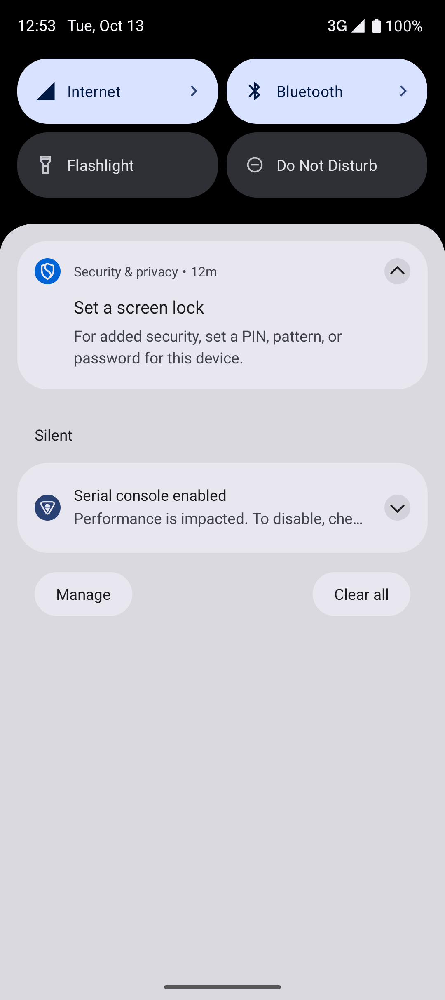

Stride: workout foreground services
Google Play review evidence for com.codescribblr.stride, version 1.9 (16), prepared October 13, 2026 by JRWDevelopment.
These are actual recordings from an Android 15 test emulator running the Play debug variant of the same version 16 source. Locations and workouts are synthetic. No personal workout data is shown. Videos are silent; no audio recording is claimed.
1. Optional GPS and background workout timing
The user enables outdoor GPS, grants Android's while-in-use precise location permission, and starts a workout. The ongoing notification continues timing outside the app, supports pause and continue, and the workout returns with GPS distance after the screen is switched off and back on. The brief black section is the screen-off period. GPS pauses when the workout is paused.
Open the background-workout video directly
2. Ending a workout stops the service
A second short workout shows Pause → End workout → Save activity. Stride returns to Today and its ongoing workout notification disappears. ADB service inspection also confirmed that no Stride foreground service remained after this action.
Open the end-workout video directly
Notification panel after ending the workout

Why the permissions are needed
FOREGROUND_SERVICE_SPECIAL_USE: A user-started interval timer must maintain accurate walk, jog, and run transitions, spoken coaching, and notification controls with the screen off. Delaying or restarting it would lose the current interval and miss time-sensitive cues. The user can pause, continue, and end the workout.
FOREGROUND_SERVICE_LOCATION: When optional GPS is enabled, the same workout records route samples, distance, and pace while the screen is locked. It stops recording when paused or ended and does not track between workouts. Stride does not request ACCESS_BACKGROUND_LOCATION.
Contact: support@jrwdev.com · Privacy policy